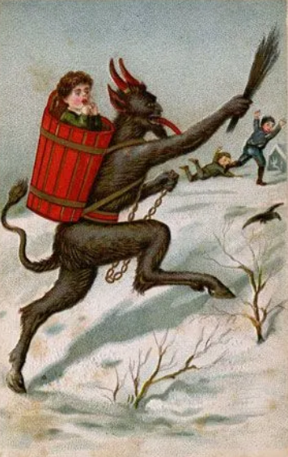

B1 · Culture & Traditions
Three Figures of Christmas
A fourth-century bishop, an Alpine demon and a green creature invented in 1957.
Play the audio and follow along, then read it again on your own. Tap or hover over a highlighted word to see what it means.
Three figures turn up at Christmas, and they could hardly be less alike. One was a real person. One comes from folklore older than anyone can date. One was invented by an American author in 1957. Between them they cover most of what the season seems to be about.
St Nicholas was a bishop in the city of Myra, in what is now Türkiye, in the fourth century. Very little about his life is documented, but the stories attached to him are consistent about one thing: he gave things away, and he did it quietly. The best known is about three sisters whose family was too poor to provide dowries, which at the time meant they could not marry. Nicholas is said to have thrown bags of gold through their window at night so that nobody would know where the money had come from. His feast day is the sixth of December.
Over the following centuries that quiet, generous bishop became something else. The Dutch kept him as Sinterklaas, and Dutch settlers carried the name to North America, where it turned into Santa Claus. The red suit, the reindeer, the workshop and the list of who has been good were added gradually by poets, illustrators and, eventually, advertisers. Almost nothing about the modern figure comes from the historical man, except the central idea — that someone arrives in the night and leaves presents.
Krampus is the other half of the same arrangement. He comes from Alpine folklore, in Austria, southern Germany and neighboring regions, and he is the reason the reward only means something. He is half goat and half demon, with horns, a long red tongue and chains he drags behind him, and while St Nicholas visits the children who have behaved, Krampus comes for the ones who have not. Depending on which version you hear, he leaves birch twigs, or carries the worst offenders off in a basket.

In many Alpine towns Krampusnacht, the night of the fifth of December, is still marked with parades. People in carved wooden masks and full fur costumes run through the streets with bells and torches, making as much noise as possible, and they chase spectators — who are, mostly, delighted. It is genuinely frightening if you are small, and it is meant to be. The two figures arrive together, on consecutive nights, and the pairing is the point: generosity means more where there is something to be afraid of.
The Grinch is the newest of the three and the only one nobody has ever believed in. Dr Seuss created him in 1957 for a picture book, How the Grinch Stole Christmas! He is green, bad-tempered, and lives in a cave on Mount Crumpit above the town of Whoville, whose residents love Christmas in a way he finds unbearable. So he steals it — the trees, the presents, the food, everything — and waits on the mountain to hear them cry.
They sing instead. The Grinch, listening, works out that Christmas was never in the boxes, and the discovery is what changes him; in the story's most quoted line, his heart grows three sizes that day. He carries everything back down and is given the honor of carving the roast beast.
It is a neat sequence, taken together. The saint rewards you, the demon punishes you, and the Grinch works out that the whole accounting system was beside the point.
Key Vocabulary
- folklore the traditional stories and customs of a people
- bishop a senior Christian priest with authority over a region
- documented recorded in written evidence
- dowry money or property a bride's family gave to make a marriage possible
- feast day the day of the year on which a saint is remembered
- settler someone who moves to live in a new country
- eventually in the end, after a long time — careful: not 'from time to time'
- to drag to pull something heavy along behind you
- birch a pale-barked tree whose thin twigs were used for punishment
- offender someone who has done wrong
- bad-tempered easily annoyed; often in a bad mood
- unbearable impossible to tolerate
- to work something out to come to understand it by thinking
- beside the point irrelevant to what actually matters
- a costume clothes worn to look like somebody or something else — careful: not a habit or custom
Three Figures of Christmas — B1 · Culture & Traditions · Renan the Teacher, English Language Academy · https://renangrossi.github.io/englishclasses/reading/b1/christmas-krampus-grinch.html
Interactive Exercises
Practice
Complete each exercise, then click Submit to see your score and an explanation for every answer.
Speaking & Writing
Discussion
There are no right answers here — use these to practice speaking, or write a short answer to each.
- The text says a reward means more when there is also something to fear. Do you agree?
- Almost nothing about modern Santa comes from the real St Nicholas. Does that matter?
- Krampus frightens children deliberately. Is that a reasonable part of a children's tradition?
- Does your country have a Christmas or winter figure that visitors would find strange? Describe it.
- Write about 120 words about a tradition from your childhood, explaining where it came from and what it was actually for.